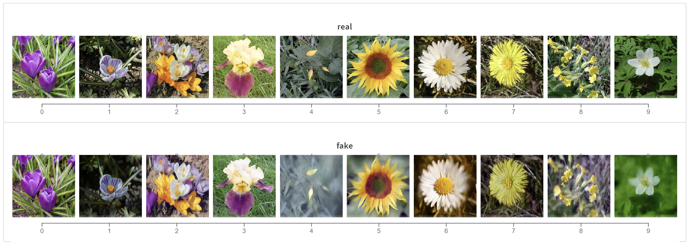
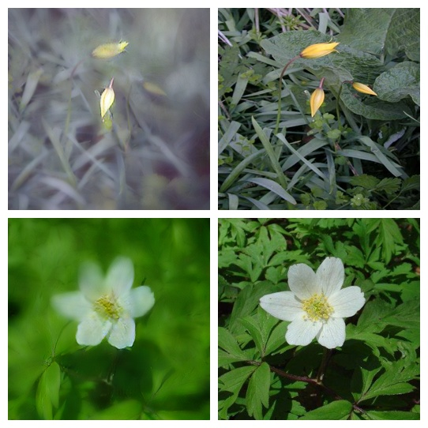
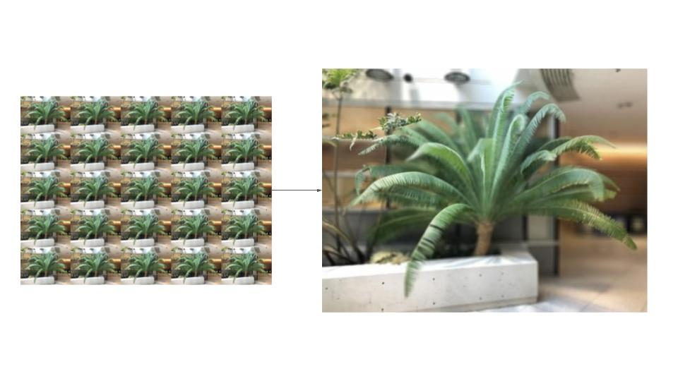
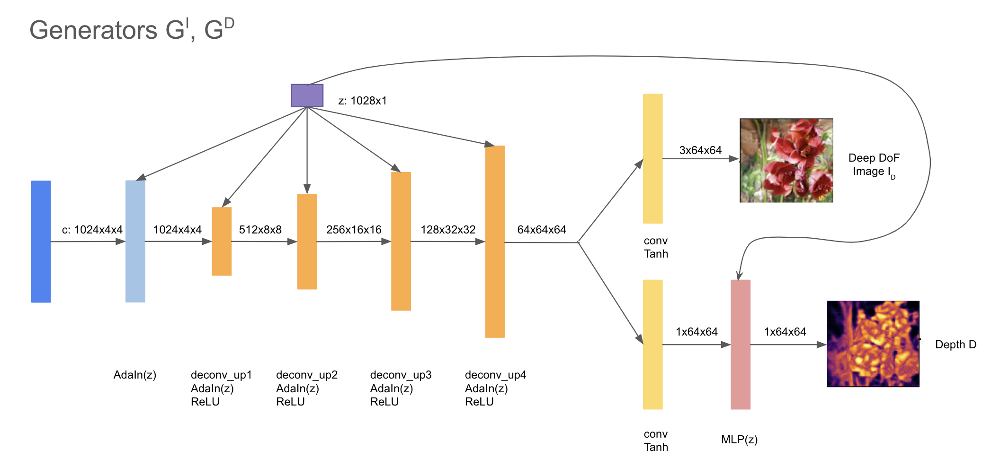
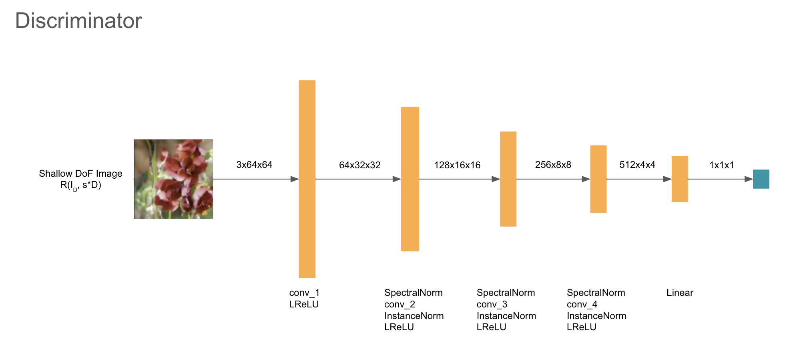
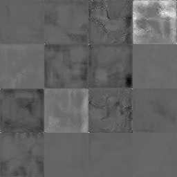

**A Survey of Aperture Rendering with GANs and NeRF**
Emma Liu (emmaliu), Jason Xu (jiachenx), Joyce Zhang (yunyizha)
(#) Overview
(##) Introduction/Abstract
In our project, we survey three machine learning methods rendering shallow DOF images from deep DOF images: CycleGAN, NeRF, and ARGAN. We manipulated existing models to implement shallow DOF synthesis and implemented the paper "Unsupervised Learning of Depth and Depth-of-Field Effect from Natural Images with Aperture Rendering Generative Adversarial Networks" from scratch. In the end, we compare and analyze the advantages and disadvantages of each method.
(##) Background
In photography, depth-of-field (DoF) is the distance between the nearest and the farthest objects that are in focus in an image. A shallow depth of field, generated by a large aperture, is a desirable feature for many photos of objects and people, due to the beautiful blur in the background ("bokeh") that highlights and complements the subject. This effect is usually obtained by using large apertures, lightfield cameras, and more recently, also through computational photography techniques by fusing multiple camera outputs together.
Although technological developments have enabled shallow DoF photos on smaller sensors such as smartphones, the limitation that these photos have to be captured with a specialized camera system still remains, and changing the DoF after capture might be extremely difficult depending on the method of capture. Our project aims to tackle this limitation by finding a way to apply bokeh effects resulting from shallow DoF to any photo and enable easy adjustment of the amount of effect applied through GAN-based machine learning.
The three techniques we survey operate on different principles -- which will be elaborated in more detail in their own section -- here is a quick overview:
CycleGAN | NeRF based | ARGAN
-------|------|----------
Set-level Supervision | Image level supervision | Unsupervised
Easy to train | Difficult to train | ??
Synthesizes deepDOF -> shallowDOF | synthesizes lightfield of deepDOF -> composes shallowDOF | synthesizes lightfield of deepDOF -> composes shallowDOF
Easy to use | Difficult to use | ??
.
(##) Dataset
In our study, we use the [Oxford Flowers Dataset from the Visual Geometry Group](https://www.robots.ox.ac.uk/~vgg/data/flowers/). This data was chosen as it's an unlabeled dataset, and the assumption made by ARGAN, such as having center-focused foreground objects. Note that we did not use this data for NeRF-based approach, as NeRF models requires a long training process and beyond the scope of this project.
(#) CycleGAN
(##) Overview
CycleGAN is a generative adversarial network (GAN) that allows for generates images from translate an image from a source domain X to a target domain Y in the absence of paired examples. The model consists of a generator G and a discriminator D, and maintains cycle consistency between X and Y.
image taken from official CycleGAN documentation
(##) Method & Results
In this project, we use the [Pytorch implementation of CycleGAN](https://github.com/junyanz/pytorch-CycleGAN-and-pix2pix) published by Dr. Jun-Yan Zhu. We also use the pre-trained model *iphone2dslr_flower* provided by the authors. The pretrained model goes from deep DOF images captured on iphones to shallow DOF images captured using a dlsr camera. We selected a set of flowers randomly from the dataset and run it through the model. The output is a generated image.


The generated models yield overall good results. Some parts of the image are blurred to simulate the bokeh effect, while foreground elements are kept in focus. From the randomly selected images, most of them were able to correctly identified the foreground element. The most visible artifact, from this method, is that results sometimes yield unnecessary color changes. It should also be noted that the shallow DOF image generated has a set DOF, that is, the user cannot adjust how much the image is blurred. This is because the model limited by the data it is trained on, and we would require several datasets to train the model if we wish to have different aperture sizes.
(#) NeRF
(##) Overview
Neural radiance fields (NeRFs) are a state-of-the-art method for synthesizing a 3-dimensional view of an image from various captures at different angles by learning a function with 5-D inputs, $f(x, y, z, \theta, \phi)$, representing 3-D spatial coordinates in the image space and 2-D spherical coordinates representing view direction. Among the many uses for this learned function is simulating a lightfield grid, with which we can use to synthesize an image with shallow DoF.
(##) Lightfield from NeRF function
A lightfield image is captured by a camera system with lenslets in a rectangular grid, producing images offset from each other on the x-y plane (the plane parallel to the capture subject) by a set amount. Since NeRF functions are able to produce views from any position and viewing angle, we can simulate a lightfield capture by rendering the NeRF function repeatedly, using a grid of $x,y$ offset values simulating the position of each lenslet. Grouping all of these render results together yields an image array that can be processed with any lightfield processing algorithms, including the refocusing algorithm we discuss below.
(##) Refocusing with Lightfield Array
The lightfield refocusing algorithm relies on the fact that there exists many images of the same subject at slightly different viewpoints to render a new image by selecting images with an aperture, shifting each image, then averaging the images together to produce a new image. The idea is that by shifting every pixel in an image, we in reality shift farther elements of the image more and the closer elements less, due to the parallax effect. In addition, when averaging multiple images together, aligned pixels will be clear and unaligned pixels will be blurred. Additionally, we will see more intense blur and less areas in focus as we include more images in the averaging, due to more pixels being unaligned, and by a larger amount.
Using these intuitions, we can write the refocusing algorithm using the lightfield image array $L$, sub-image location on the lightfield grid $(u,v)$, pixel location on a sub-image $(s, t)$, pixel shift $d$, and the set of images included in the aperture, $A$, as: $$I(s, t, d) = \frac{1}{d} \int\int_{(u, v) \in A} L(u, v, s + d, t + d)\;du\;dv$$ where A is determined by sub-images within a specified radius from the center of the lightfield.
(##) Results and Discussion
We used a pre-optimized model of a fern provided by the authors of the NeRF paper in their codebase, generated a 5x5 lightfield to match AR-GAN's lightfield grid size, and generated a new image with the center of the fern in focus, as shown below.

Using this generated lightfield, we are also able to control the amount of blur and choose parts of the image in focus by changing our inputs of $d$ and $A$ into the refocusing algorithm.
Overall, we are greatly satisfied with the quality of the image that we obtained. The adjustability of the shallow DoF effect is also greatly beneficial. The only downside is that NeRFs take a significant amount of data and massive amounts of computing power to train, with every new capture requiring a new round of training, which makes generating shallow DoF images this way incredibly expensive and impractical. However, pre-trained models may use this pipeline easily and effectively.
(#) ARGAN
(##) Pipeline
(###) DoF Mixture Learning
(###) Center Focus Prior
In images with a blurred blackground and shallow DoF, it is the most common case that the object in focus is in the center. This means that a depthmap of a shallow DoF image will most commonly have the smallest depth at the center, and gradually increasing depth towards the edges. For our project, this is true with our training data as well. Therefore, when training generation of the depth map, we implement a center focus prior so that the resulting depth map can have a realistic distribution of depth.
The center focus prior $D_p$ is a function defined by an in-focus radius threshold $r_{th}$ and a rate of depth increase $g$. We define the depth for all pixels within $r_{th}$ to be 0, and all pixels outside of $r_{th}$ to be increasing in depth at rate $g$, having depth $g \cdot (r_{th} - r)$. This prior can then be used to calculate a prior loss against a generated depth map, $\mathcal{L}_p=\lambda_p \|D^g-D_p\|^2_2$ , which becomes a weighted portion of the total generator loss.
(##) Model Architecture
We modeled the architecture after the implementation details described by Kaneko. However, after experiencing a few ambiguities in his implementation notes, we modified a few details. Specificaly, we found that replacing $deconv$ layers shared between $G_I$ and $G_D$ with $up_conv$ layers, which we are more familiar with in GAN model generation thanks to HW3, produced more realistic-looking results.
(###) Generators
Given a random noise $z$, we first generateo a deep DoF image $I_g^d(x)$ and corresponding depth $D_g(x)$ with two generators that share weights except for the last layer. We do this because the deep DoF image and depth image must reflect one another (i.e. exhibit a strong correlation). Effectively, we are learning a joint distribution between their domains.

(###) Depth Training Networks
After the depth image is produced, the depth image is submitted to the neural network $T$ that is co-trained to expand $D(x)$ into a depth map $M(x,u)$ for each view in the light field. Note that in this notation, we are indexing into the depth map with a flattened 1D aperture coordinate $u$ (there are 25 channels in this depth map, one corresponding to each aperture coordinate $(u',v')$ and corresponding image coordinates $x$ (hence 64x64 image per channel).
The architecture of this network $T$ is depicted in the diagram below. The image and channel dimensions remain constant here - it's just a pass-through
(###) Discriminator

(##) Lightfield Renderer
(###) Depth Map Warper
(###) Lightfield Integration over Aperture
(##) Training
(###) Pass-Through Flow
(###) Parameter Setup
(##) Results
Results shown below after 5000 iterations of AR-GAN trained with DoF mixture learning, recommended parameters in the paper and the Oxford Flowers dataset, hand-picked for images with a central subject.
Depth map produced by AR-GAN:

Generated deep DoF images by AR-GAN:
Shallow DoF images produced by AR-GAN's aperture renderer: